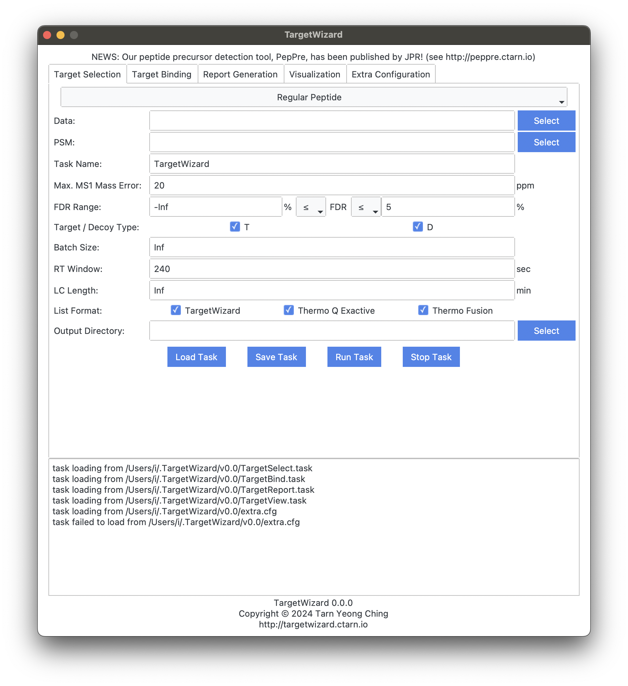

Start Guide
Installation
Linux
Please download the software from https://targetwizard.ctarn.io.
Please unzip the downloaded .zip file, and TargetWizard can be used directly without installation.
macOS
Please download the software from https://targetwizard.ctarn.io.
For macOS users, we provide both .pkg and .zip files.
We would recommend to use the .pkg file which can be installed by simply double clicking it. The software would be installed at /Applications/TargetWizard.app by default.
The .zip file contains the .app package software and can be used directly without installation. If the macOS says:
“TargetWizard.app” is damaged and can’t be opened. You should move it to the Trash.Please run
sudo xattr -r -d com.apple.quarantine [path/to/TargetWizard.app]in terminal to remove the quarantine attributions.
Windows
Please download the software from https://targetwizard.ctarn.io.
Please unzip the downloaded .zip file, and TargetWizard can be used directly without installation.
The software is packaged using PyInstaller, and can be detected as virus by mistake on Windows (see the issue). Please restore the deleted file from Protection History, and Windows Security should not stop or delete it again. Otherwise, please add the software to white list. You can also package the software from source yourself.
Usages
The software can be used in four ways:
- Graphic User Interface
- Command Line
- Source Code
- Julia Package
Graphic User Interface
The software provides an easy-to-use graphic user interface, as shown below: 
Command Line
In addition to the GUI, the software provides executables that can be called directly from the command line to facilitate large-scale use.
For macOS, the executables are located at path/to/TargetWizard.app/Contents/MacOS/content/TargetWizard/bin/, and for Linux and Windows, they are located at path/to/TargetWizard/content/TargetWizard/bin/
For each executable, use --help for respective usage.
$ ./TargetSelect --help
usage: TargetSelect --psm PSM [-o ./out/] [--name name] [--error ppm]
[--fdr_min min] [--fdr_max max] [--fdr_ge]
[--fdr_le] [--td T,D] [--batch num] [--rtime sec]
[--lc min] [--fmt TW,TmQE,TmFu] [-h] data...
positional arguments:
data list of .umz or .ms1/2 files; .ms2/1 files
should be in the same directory for .ms1/2
optional arguments:
--psm PSM pFind PSM file (full list)
-o, --out ./out/ output directory (default: "./out/")
--name name task name (default: "TargetWizard")
--error ppm m/z error (default: "20.0")
--fdr_min min min. FDR (%) (default: "-Inf")
--fdr_max max max. FDR (%) (default: "Inf")
--fdr_ge include min. FDR (compared with `≥ min` instead
of `> min`)
--fdr_le include max. FDR (compared with `≤ max` instead
of `< max`)
--td T,D target/decoy types (split by `,`) (default:
"T,D")
--batch num batch size (default: "Inf")
--rtime sec retention time window (sec) (default: "240")
--lc min LC gradient length (min) (default: "Inf")
--fmt TW,TmQE,TmFu format(s) of target list (split by `,`)
TW: TargetWizard, TmQE: Thermo Q Exactive, TmFu:
Thermo Fusion (default: "TW,TmQE,TmFu")
-h, --help show this help message and exitSource Code
You can also use or modify the source code directly. The source code can also be download from http://targetwizard.ctarn.io. You need to set up the Julia environment to run the source code. Please see the guide.
The source code can be called using:
$ julia src/TargetSelect.jl --help
usage: TargetSelect --psm PSM [-o ./out/] [--name name] [--error ppm]
[--fdr_min min] [--fdr_max max] [--fdr_ge]
[--fdr_le] [--td T,D] [--batch num] [--rtime sec]
[--lc min] [--fmt TW,TmQE,TmFu] [-h] data...
positional arguments:
data list of .umz or .ms1/2 files; .ms2/1 files
should be in the same directory for .ms1/2
optional arguments:
--psm PSM pFind PSM file (full list)
-o, --out ./out/ output directory (default: "./out/")
--name name task name (default: "TargetWizard")
--error ppm m/z error (default: "20.0")
--fdr_min min min. FDR (%) (default: "-Inf")
--fdr_max max max. FDR (%) (default: "Inf")
--fdr_ge include min. FDR (compared with `≥ min` instead
of `> min`)
--fdr_le include max. FDR (compared with `≤ max` instead
of `< max`)
--td T,D target/decoy types (split by `,`) (default:
"T,D")
--batch num batch size (default: "Inf")
--rtime sec retention time window (sec) (default: "240")
--lc min LC gradient length (min) (default: "Inf")
--fmt TW,TmQE,TmFu format(s) of target list (split by `,`)
TW: TargetWizard, TmQE: Thermo Q Exactive, TmFu:
Thermo Fusion (default: "TW,TmQE,TmFu")
-h, --help show this help message and exitJulia Package
The source code can also be imported as a Julia package. You should first set up the Julia environment, download the source code, and then register the package:
$ julia
_
_ _ _(_)_ | Documentation: https://docs.julialang.org
(_) | (_) (_) |
_ _ _| |_ __ _ | Type "?" for help, "]?" for Pkg help.
| | | | | | |/ _` | |
| | |_| | | | (_| | | Version 1.10.4 (2024-06-04)
_/ |\__'_|_|_|\__'_| | Official https://julialang.org/ release
|__/ |
(@v1.10) pkg> dev path/to/TargetWizard.jl
Resolving package versions...
Updating `~/.julia/environments/v1.10/Project.toml`
[faeafb7a] + TargetWizard v1.0.0 `path/to/TargetWizard.jl`
Updating `~/.julia/environments/v1.10/Manifest.toml`
[faeafb7a] + TargetWizard v1.0.0 `path/to/TargetWizard.jl`Then the package can be imported through:
$ julia
_
_ _ _(_)_ | Documentation: https://docs.julialang.org
(_) | (_) (_) |
_ _ _| |_ __ _ | Type "?" for help, "]?" for Pkg help.
| | | | | | |/ _` | |
| | |_| | | | (_| | | Version 1.10.4 (2024-06-04)
_/ |\__'_|_|_|\__'_| | Official https://julialang.org/ release
|__/ |
julia> import TargetWizard
julia> TargetWizard.TargetSelect.build_target
build_target (generic function with 1 method)
julia> methods(TargetWizard.TargetSelect.build_target)
# 1 method for generic function "build_target" from TargetWizard.TargetSelect:
[1] build_target(df, Ms, paths, out, name, ε, batch_size, rt, lc, fmt)
@ path/to/TargetWizard.jl/src/util.jl:36
julia> Frequently Asked Questions
- macOS says: “TargetWizard.app” is damaged and can’t be opened. You should move it to the Trash.
Please run sudo xattr -r -d com.apple.quarantine [path/to/TargetWizard.app] in terminal.
- Windows Security stops the software and deletes the .exe file.
The software is packaged using PyInstaller, and can be detected as virus by mistake on Windows (see the issue). Please restore the deleted file from Protection History, and Windows Security should not stop or delete it again. Otherwise, please add the software to white list. You can also package the software from source yourself.